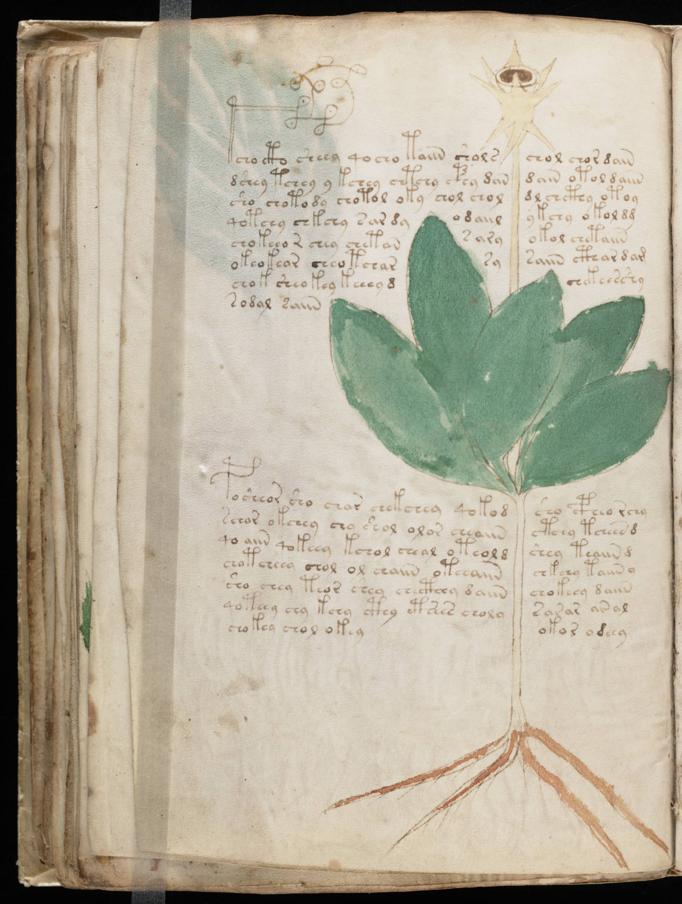

f42v
1tcho cto sheey qocho taiin sholschol chor dain2dshey tchey y kchey chtchy cphy dandain otol daiin3sho chotody chotol oky chol choldl chcthy otoy4qotchy chkchy sar dyodaiilykchy okol dd5chokeeor chey chetans aryokol chetaiin6okeokear cheotcharsysaiin cthar dam7chok sheokey keeey dchekeesshy8sodal saiin9posheor sho char chekchey qokodsho cpheo rchy10schor okchey chy shol olor cheaiinctchy tcheen d11qo aiin qokeey kchol cheal oteol dshey teaiin d12chotcheey chol ol chaiin oteeaiinchkchy taiin y13sho chey teor shey checthhy daiinchokeey daiin14qoteey chy kchy cthy etsees cholysarar ar al15chokey chol okey16okor odeey
